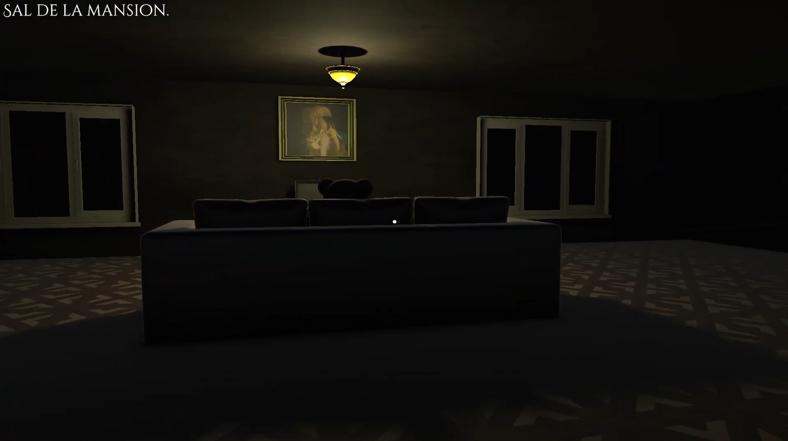
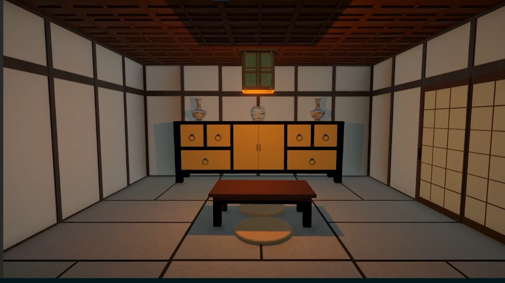
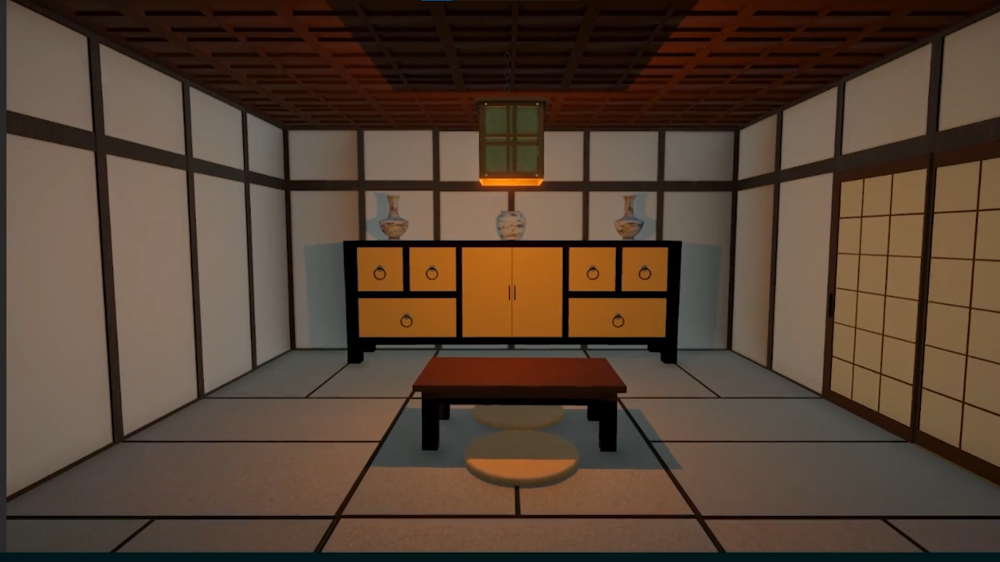

Proyectos de Videojuegos
Nexus Chronicles
Diseñador de Nivel 3D y Artista de Entornos
Nexus Chronicles es un juego de aventuras en tercera persona con elementos de puzzle y exploración. El jugador viaja a través de diferentes dimensiones para restaurar el equilibrio del multiverso.


Retos y Soluciones
Reto: Crear un sistema de transición fluida entre dimensiones con cambios visuales drásticos sin afectar el rendimiento.
Solución: Desarrollé un sistema de precarga de assets por niveles y optimicé las texturas utilizando técnicas de LOD (Level of Detail). Implementé shaders personalizados en Unity que permitían cambiar la paleta de colores y efectos de post-procesamiento de manera progresiva durante las transiciones.
Disponible en: itch.io
 
